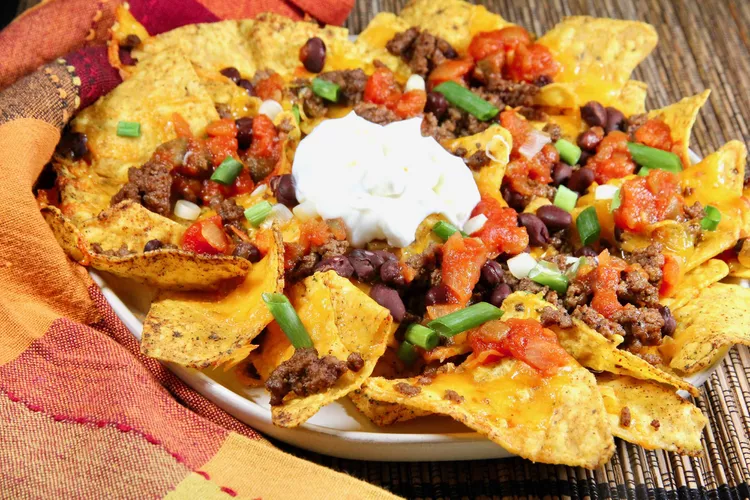

Lasagna

Best nachos in the damn world
Ingredients
Nachos
- cooking spray
- 8 ounces lean ground beef
- 1 tablespoon water
- 1 teaspoon taco seasoning
- 1/4 teaspoon cayenne pepper
- salt and freshly ground black pepper to taste
- 5 ounces thin corn tortilla chips
- 2 cups shredded Cheddar cheese
Toppings
- 1/2 can black beans, rinsed and drained
- 1/3 cup salsa
- 3 tablespoons sliced green onions
- 1/3 cup sour cream
Steps
- Preheat the air fryer at 360 degrees F (182 degrees C) for about 5 minutes. Line the air fryer basket with foil or a parchment liner, and spray with cooking spray.
- Heat a small skillet over medium heat and cook ground beef until browned and crumbly, about 3 minutes; drain grease. Stir in water, taco seasoning, cayenne, salt, and pepper. Remove skillet from heat.
- Set tortilla chips in the basket, spreading them out and overlapping slightly so the melted cheese won't drip through the open gaps. Evenly sprinkle Cheddar cheese over the chips. Only add a couple of layers of chips with cheese in between in the fryer basket, or just add a single layer and cook in batches.
- Evenly distribute ground beef and black beans over the cheese, sprinkle green onions on top, and add spoonfuls of salsa.
- Transfer the basket into the air fryer and cook until cheese is melted and starting to slightly brown on the edges, 4 to 6 minutes. The nachos will cook evenly and quickly but watch closely so they don't burn.
- Remove nachos to a serving plate, garnish with sour cream, and serve immediately. Put extra toppings in small bowls and let everybody customize their nachos.